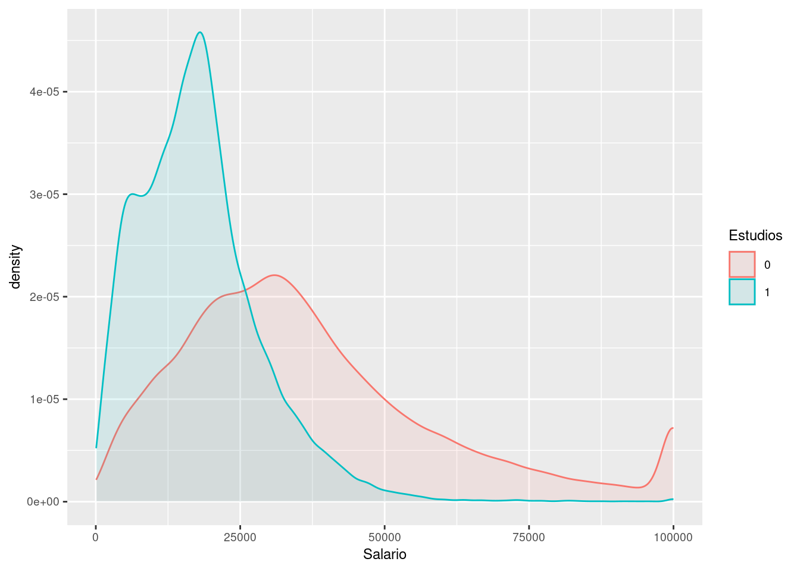
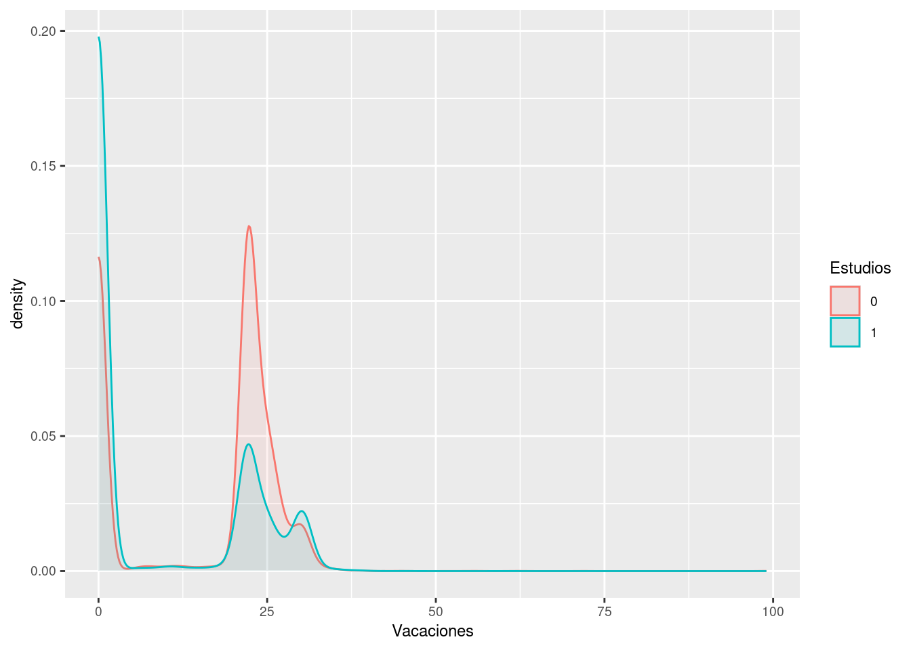
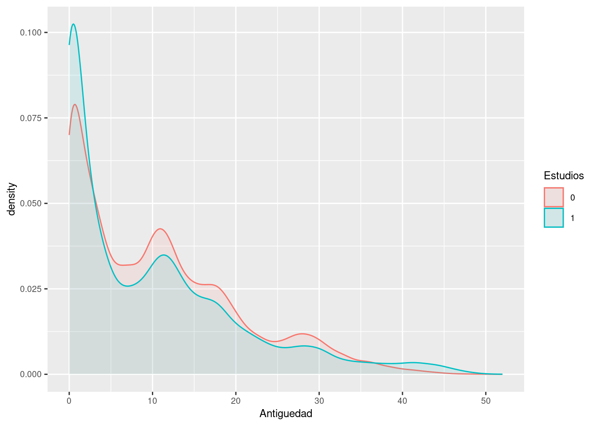
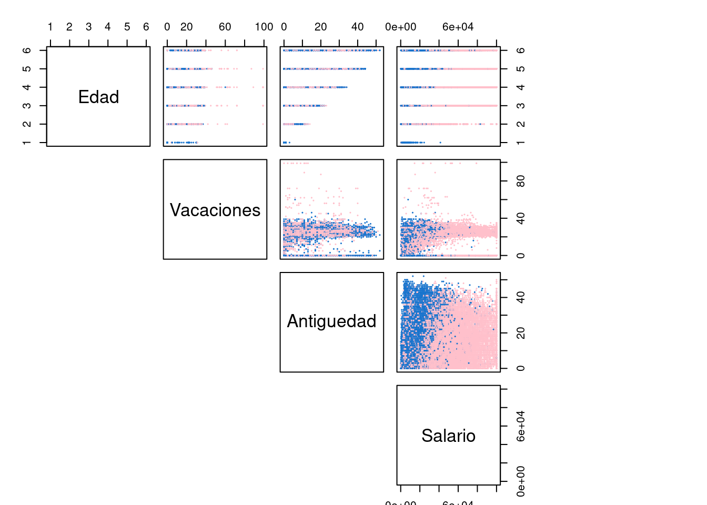
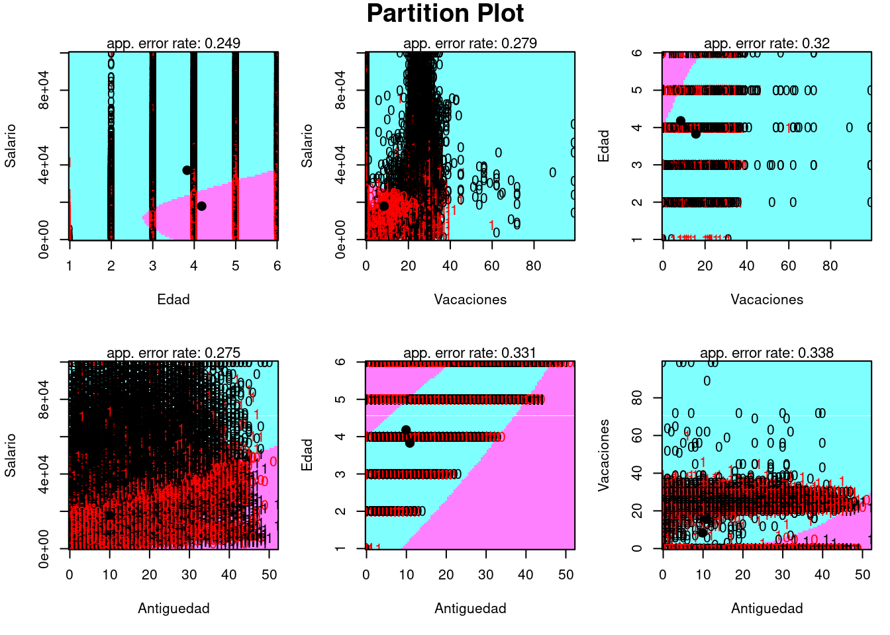

# Librerias
library(readxl) # Para leer los excels
library(dplyr) # Para tratamiento de dataframes
library(ggplot2) # Nice plots
library(caret) # For data paratition
library(MASS) # funciones lda() y qda()
library(klaR) # partimatAnálisis Discriminante: laboral
Introducción
dataset
En este cuaderno vamos a analizar el dataset llamado laboral.xlsx. Este contiene microdatos relativos a la Encuestas de estructura salarial. Resultados. Concretamente, datos correspondientes al año 2018. Las variables de interés son las siguientes:
Estudios: Nivel de estudios del encuestado. Valor 1 corresponde a individuos con muy bajo nivel académico (hasta primaria), y 0 a individuos con al menos nivel académico universitario.
Salario: Sueldo bruto anual.
Edad: Grupo de Edad del encuestado. Puesto que las clases tienen un orden intrínseco, la variable la vamos a tratar como cuantitativa.
- 01 MENOS 19 AÑOS
- 02 DE 20 A 29
- 03 DE 30 A 39
- 04 DE 40 A 49
- 05 DE 50 A 59
- 06 MÁS DE 59
Antiguedad: Años de antigüedad.
Vacaciones: Días de vacaciones al año.
El objetivo de este estudio será aplicar un Análisis Discriminante para clasificar a la población entre alto y bajo nivel de estudios a partir de estas variables. Además se verá si el salario en si mismo constituye un buen factor de discriminación.
Cargamos entonces el conjunto de datos:
datos <- read_excel("../../../../files/laboral.xlsx", sheet = "Datos")Descripción del trabajo a realizar
(Esto irá en la web de explica) Se pretende hacer un Análisis de Discriminante empleando los procedimientos de LDA (Análsis de Discriminante Lineal) y QDA (Análisis de Discriminante Cuadrático).
- Hacer un análisis exploratorio. Ver si las variables separan bien las clases.
- Convertir a factor la variable respuesta.
- Realizar una partición de datos Train/Test.
- Fijar semilla cuando se usen números aleatorios (para la reproductividad).
- Ejecutar algoritmos lda/qda y evaluar su bondad.
Análisis de Discrminante: LDA y QDA
Introducción
El análisis discriminante es una técnica estadística utilizada para clasificar observaciones en grupos o categorías predefinidas en función de un conjunto de variables predictoras.
El objetivo principal es identificar las características o variables que mejor distinguen entre diferentes grupos conocidos. Es una técnica de aprendizaje supervisado, lo que significa que requiere un conjunto de datos etiquetado con información sobre las categorías o grupos a los que pertenecen las observaciones.
El análisis discriminante se puede dividir en dos tipos principales:
Análisis Discriminante Lineal (LDA): LDA asume que las variables predictoras tienen una distribución normal y que las matrices de covarianza de las variables predictoras son iguales para todos los grupos. LDA busca un hiperplano (o límite de decisión) que maximice la distancia entre las medias de los grupos y minimice la varianza dentro de cada grupo. Debido a la asunción de igual covarianzas, los hiperplanos que separan las clases son lineales.
Análisis Discriminante Cuadrático (QDA): QDA relaja la suposición de igualdad de matrices de covarianza y permite que cada grupo tenga su propia matriz de covarianza. Esto hace que QDA sea más flexible pero también requiere más datos para estimar las matrices de covarianza para cada grupo. Los hiperplanos que separan las clases son cuadráticos.
Análisis Exploratorio (EDA1)
Veamos un resumen de los datos y si hay algún NA para quitarlo/imputarlo.
summary(datos) Estudios Edad Vacaciones Antiguedad
Length:99782 Min. :1.000 Min. : 0.00 Min. : 0.0
Class :character 1st Qu.:3.000 1st Qu.: 0.00 1st Qu.: 2.0
Mode :character Median :4.000 Median :22.00 Median : 9.0
Mean :3.955 Mean :12.99 Mean :10.5
3rd Qu.:5.000 3rd Qu.:23.00 3rd Qu.:16.0
Max. :6.000 Max. :99.00 Max. :52.0
Salario
Min. : 63
1st Qu.: 15200
Median : 24959
Mean : 30106
3rd Qu.: 39228
Max. :100000 sum(is.na(datos))[1] 0Ahora grafiquemos los histogramas de las variables distinguiendo entre variable respuesta a ver si alguno de ellos parece separar bien las variables y por tanto es susceptible de que funcione luego bien en LDA/QDA.
Vamos a dibujar las denisdades de las variables distinguiendo entre las clases de la variable respuesta para ver si alguna de las variables permite una clara separación entre variables.
library(ggplot2)
ggplot(datos, aes(Salario)) +
geom_density(aes(group = Estudios, colour = Estudios, fill = Estudios), alpha = 0.1) +
theme(text = element_text(size = 9))
library(ggplot2)
ggplot(datos, aes(Vacaciones)) +
geom_density(aes(group = Estudios, colour = Estudios, fill = Estudios), alpha = 0.1) +
theme(text = element_text(size = 9))
library(ggplot2)
ggplot(datos, aes(Antiguedad)) +
geom_density(aes(group = Estudios, colour = Estudios, fill = Estudios), alpha = 0.1) +
theme(text = element_text(size = 9))
Vemos que la única que parece discriminar algo la variable respuesta, es la variable salarios. Se observa que los que tienen variable respuesta 0, en la mayoría de los casos presentan un salario anual bruto mayor. Luego esto puede ser un indicador de que el presente método funcionará.
Veamos ahora en 2D las clasificaciones y observamos que la variable Salario parece discriminar muy bien las clases cuando la juntamos con cualquiera de las demas, ya que se ven los colores de ambas clases separados en la última columna.
datos$Estudios <- as.factor(datos$Estudios)
Label <- datos$Estudios
colo <- c("pink", "#1874CD")[Label]
X <- datos[, c(2:5)]
pairs(X, main = "Diabetes data set", pch = 20, col = colo, lower.panel = NULL, cex = 0.2, oma = c(1, 3, 3, 15))
Por último, visualizamos las correlaciones entre variables, que no son muy altas. Aunque las correlaciones no son influyentes para el uso de este tipo de algoritmos, es aconsejable visualizarlas por si se encuentra algún dato llamativo.
library(corrplot)
corrplot(cor((datos[, 2:5])),
type = "upper",
order = "original",
method = "shade",
tl.col = "black",
tl.srt = 45,
addCoef.col = "black",
diag = FALSE
)MUY IMPORTANTE CONVERTIR LA VARIABLE RESPUESTA A FACTOR ya que representa dos clases, es decir, es una variable cualitativa.
datos$Estudios <- as.factor(datos$Estudios)Partición de datos
Para evitar el overffiting debido a que el modelo se ha entrenado demasiado con los datos proporcionados, vamos a realizar una partición de datos y una vez entrenado el modelo, lo evaluaremos con la partición segunda.
Para ello usamos la función caret::createDataPartition() que nos permite mantener la proporción de la variable binaria respuesta. En caso de no usar esta función podriamos estar dejando en la partición de entreno observaciones con la misma variable respueta y dejar la clase minoritaria infrarepresnetada, lo que podría incurrir en un mal ajsute del modelo para dicha clase.
set.seed(785248) # For Reproducibility
spl <- createDataPartition(datos$Estudios, p = 0.75, list = FALSE) # 75% for training
laboralTrain <- datos[spl, ]
laboralTest <- datos[-spl, ]Análisis de Discriminante Lineal (LDA)
Como se ha comentado previamente:
- Se supone que la distribución de los datos es una normal multivariante.
- Supone que todas las matrices de covarianzas son iguales ( y por tanto el clasificador es lineal).
set.seed(785248) # For Reproducibility
lda.class.laboral <- lda(Estudios ~ Salario + Edad + Vacaciones + Antiguedad, data = laboralTrain)
# qda.class.diabetes
plot <- partimat(Estudios ~ Salario + Edad + Vacaciones + Antiguedad, data = laboralTrain, method = "lda")set.seed(785248)
# predict with the lda model and test data
pred.lda <- predict(lda.class.laboral, laboralTest)$class
# confusion matrix
confusionMatrix(pred.lda, laboralTest$Estudios)Confusion Matrix and Statistics
Reference
Prediction 0 1
0 13492 3633
1 2389 5430
Accuracy : 0.7586
95% CI : (0.7532, 0.7639)
No Information Rate : 0.6367
P-Value [Acc > NIR] : < 2.2e-16
Kappa : 0.4623
Mcnemar's Test P-Value : < 2.2e-16
Sensitivity : 0.8496
Specificity : 0.5991
Pos Pred Value : 0.7879
Neg Pred Value : 0.6945
Prevalence : 0.6367
Detection Rate : 0.5409
Detection Prevalence : 0.6865
Balanced Accuracy : 0.7244
'Positive' Class : 0
Exactitud (Accuracy): La exactitud del modelo es del 75.86%, lo que significa que el modelo clasificó correctamente aproximadamente el 75.86% de las instancias en el conjunto de prueba.
Sensibilidad (Sensitivity o Recall): La sensibilidad del modelo para la clase 0 es del 84.96%, lo que indica que el modelo identificó correctamente alrededor del 84.96% de las instancias de la clase 0 en el conjunto de prueba.
Especificidad (Specificity): La especificidad del modelo para la clase 1 es del 59.91%, lo que significa que el modelo identificó correctamente alrededor del 59.91% de las instancias de la clase 1 en el conjunto de prueba.
En general, estos resultados muestran que el modelo LDA tiene un rendimiento decente en la clasificación de las instancias en el conjunto de prueba, con una exactitud y un kappa significativos.
Análisis de Discriminante Cuadrático
Como se ha comentado previamente:
- Se supone que la distribución de los datos es una normal multivariante.
- NO supone que todas las matrices de covarianzas son iguales ( y por tanto el clasificador es cuadrático y no lineal).
- Método muy inestable a menos que tengamos muestras muy grandes y de dimensiones bajas.
Es más inestable debido a que al permitir que cada grupo tenga su propia matriz de covarianza, aunque lo que lo hace más flexible, requiere muchos más datos para estimar las matrices de covarianza para cada grupo.
set.seed(785248) # For Reproducibility
qda.class.laboral <- qda(Estudios ~ Salario + Edad + Vacaciones + Antiguedad, data = laboralTrain)
# qda.class.diabetes
plot <- partimat(Estudios ~ Salario + Edad + Vacaciones + Antiguedad, data = laboralTrain, method = "qda")
set.seed(785248)
# predict with the qda model and test data
pred.qda <- predict(qda.class.laboral, laboralTest)$class
# confusion matrix
confusionMatrix(pred.qda, laboralTest$Estudios)Confusion Matrix and Statistics
Reference
Prediction 0 1
0 12453 2383
1 3428 6680
Accuracy : 0.767
95% CI : (0.7617, 0.7723)
No Information Rate : 0.6367
P-Value [Acc > NIR] : < 2.2e-16
Kappa : 0.5086
Mcnemar's Test P-Value : < 2.2e-16
Sensitivity : 0.7841
Specificity : 0.7371
Pos Pred Value : 0.8394
Neg Pred Value : 0.6609
Prevalence : 0.6367
Detection Rate : 0.4992
Detection Prevalence : 0.5948
Balanced Accuracy : 0.7606
'Positive' Class : 0
Exactitud (Accuracy): La exactitud del modelo es del 76.7%, lo que significa que el modelo clasificó correctamente aproximadamente el 76.7% de las instancias en el conjunto de prueba.
Sensibilidad (Sensitivity o Recall): La sensibilidad del modelo para la clase 0 es del 78.41%, lo que indica que el modelo identificó correctamente alrededor del 78.41% de las instancias de la clase 0 en el conjunto de prueba.
Especificidad (Specificity): La especificidad del modelo para la clase 1 es del 73.71%, lo que significa que el modelo identificó correctamente alrededor del 73.71% de las instancias de la clase 1 en el conjunto de prueba.
Comparando estos resultados con los del modelo LDA, observamos que el modelo QDA tiene una mayor exactitud, sensibilidad y valor predictivo negativo. Sin embargo, el modelo LDA tiene una mayor especificidad y valor predictivo positivo. La elección entre LDA y QDA depende del contexto específico del problema y de las preferencias en términos de los errores de clasificación que se desean minimizar. Si se valora más la identificación correcta de la clase minoritaria (clase 1), el modelo QDA podría ser más adecuado debido a su mayor sensibilidad. Si se desea minimizar los falsos positivos, el modelo LDA podría ser preferible debido a su mayor especificidad.
Conclusiones
En el presente estudio se ha visto como poder clasificar a individuos (que o bien tengan estudios muy altos o muy bajos) en sus respectivas clases, de acuerdo a variables de edad, salario, días de vacaciones y antigüedad en el trabajo. Se ha certificado que la variable Salario es la que más influye en el nivel de estudios, o dicho de otra manera, la gente que tiene estudios superiores (respecto a los que tienen estudios muy inferiores, hasta primaria) presentan salarios bastante más elevados. Este hecho permite discriminar bastante bien la variable respuesta mediante modelos de Análisis de Discriminante Lineal y Cuadrático.
Footnotes
EDA viene del Inglés Exploratory Data Analysis y son los pasos relativos en los que se exploran las variables para tener una idea de que forma toma el dataset.↩︎